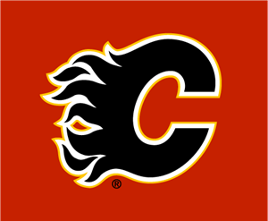
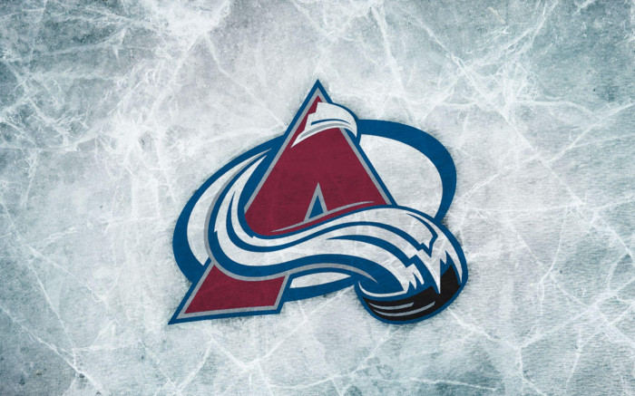
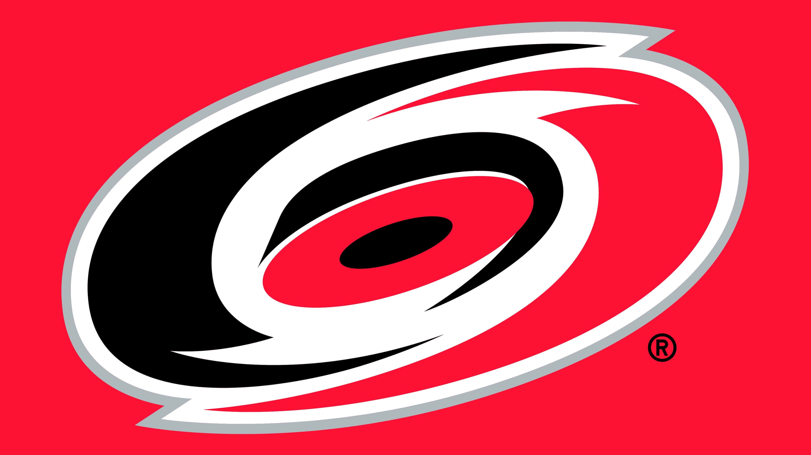

Calgary Flames

The Calgary Flames went through a lot of off-season change but have shown that most of it has been for the better as they've started off the year 5-1-0 and have earned the NHL's top power ranking in the second week up from pre-season's 4th place ranking. Also they're my favourite team so I have a heavy bias for them to make the final four
Colorado Avalanche
The defending champions the Colorado Avalanche got slightly weaker in the off-season but are still a powerhouse team that I have sure will go far. The team is starting a little slower with some injuries to key players but are a shoe-in for the playoffs and I'm sure will make the final four with relative ease when at full strength.
Toronto Maple Leafs

The Toronto Maple Leafs have had a hard time making it past the first round in recent years but constantly are improving and it is only a matter of time before a significant breakthrough. Last year's exit was particulary tough but this team is far too talented to be held down forever. I wouldn't be surprised to see the Leafs make a deep run this year!
Caronlina Hurricane
The Carolina Hurricane may seem like an odd pick but I believe that they are a strong team that may be overlooked. Another young team that had a tough time in the playoffs last year mostly cause of injuries. If they can stay healthy and get some good goaltending their offense should be able to carry them far.